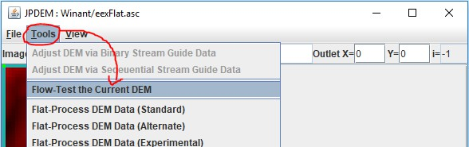
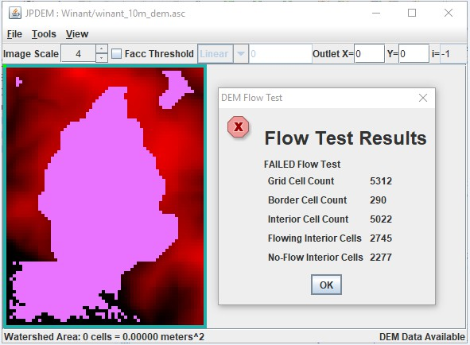
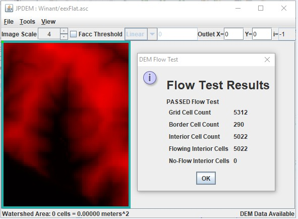

JPDEM Flow Test Tool
Overview (Tutorial B.4_JPDEM Flow Test Tool)
This document demonstrates how to use JPDEM's flow test tool to perform quality assurance on an existing DEM. The tool will report whether the DEM meets all the criteria needed to support a VELMA simulation.
Use JPDEM's flow test tool to determine:
- Whether or not a DEM data map needs to be flat-processed or not. Load the DEM .asc file in question into JPDEM and run the flow test tool. The tool will report whether the DEM contains any cells that do not have a flow path to the edge of the map. If the DEM passes the flow test, it does not require flat-processing, and can be used as-is with VELMA.
- Whether or not a flat-processing run of a DEM data map succeeded. Some of the flat-processing algorithms (e.g. "Standard" and "Alternate") do not have deterministic halting conditions. To prevent them from possibly running endlessly, they have arbitrary timeout limits. For extremely large maps, the timeout limit may occur before the map is completely flat-processed. After flat-processing a map, run the flow test tool if you suspect the flat-processor did not complete its task. If the flow test succeeds, the map was completely flat-processed.
- Basic information about a DEM data map. In addition to success or failure, the flow test tool reports some basic information about the map grid (total number of cells, total number of border cells, etc.)
The flow test tool is only enabled when JPDEM has map data loaded. The flow test tool does not expect or require any other preliminary steps; however, it can be run after additional processing (flat-processing, flow determination, etc.) have been run for JPDEM's current data map.
To run a flow test, load a map into JPDEM, and click Tools -> "Flow Test the Current DEM".

The flow test tool reports its results in a "DEM Flow Test" pop-up dialog window. (Unfortunately, the contents of the result window cannot be highlight-copied to the system clipboard. If you need to remember them, use the Windows 10 Snipping Tool to screen capture the window.)
Here are the results of running a flow test on a DEM file that has not be flat-processed:

In addition to reporting failure and the number of cells that do not flow to the border of the map, the flow test tool sets Cell Highlighting for each "no-flow" interior cell.
The no-flow cells remain highlighted until you explicitly clear the highlighting.
To clear the highlighted cells, click the View -> "High Specific Cells in Image" -> "Clear All Highlighted Cells" menu item.
In contrast here are the results of running a flow test on a flat-processed version of the same DEM file:

Here the flow test reports that all cells passed the test, and no cells are highlighted.